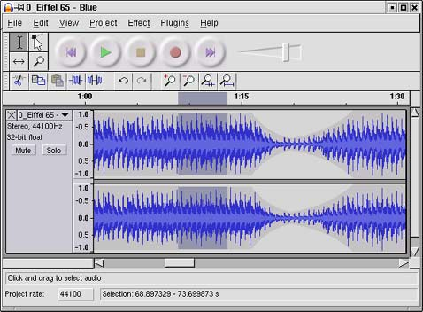
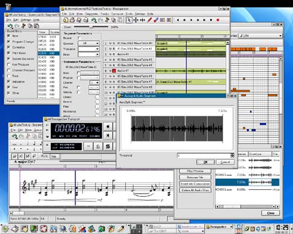

|
| ? | Mandrake Linux: пингвины просят о помощи | | ? | Microsoft боится созвучного конкурента | | ? | Открытая мультимедийная лицензия: свобода неоднозначного выбора | | ? | Официальный сайт проекта AGNULA | | ? | Проект Sourceforge.Net |
|
|
|
Проект
проводился под эгидой Европейской комиссии при участии множества
крупных научных, общественных и коммерческих организаций, включая
французский институт акустических исследований IRCAM, Фонд свободного
ПО (Free Software Foundation) и компанию Red Hat. Участие
последней ? знаковое, поскольку предполагается выпустить не одну,
а две версии AGNULA: одну ? на базе Red Hat Linux, другую ?
на базе дистрибутива Debian.
Различия между ними будут не слишком значительными, но на сайте проекта AGNULA
указывается, что Debian-вариант (DeMuDi ? Debian Music
Distribution) ориентирован скорей на специалистов, в то время как Red
Hat-версия (ReHMuDi ? Red Hat Music Distribution) ? на
пользователей.
И
вот всех можно поздравить: свет увидела версия AGNULA 0.9 Beta.
Естественно, это ещё не окончательный вариант, тот появится не ранее
2004 года, однако, по крайней мере, получено более чем убедительное
доказательство, что работа идёт, и хорошая идея не останется просто
идеей.
С самого начала был заявлен обширный набор открытого
программного обеспечения, ориентированного на работу со звуком под
Linux. Однако общая ситуация с этим ПО довольно печальная. По крайней
мере, пока.
Об
этом и пойдёт разговор. Нашими собеседниками стали представители двух
российских компаний ? разработчиков дистрибутивов Linux. Это
Григорий Бакунов и Леонид Кантер из компании ASPLinux и Александр Прокудин, сотрудник компании ALT Linux.
Мембрана: ?
До недавнего времени было довольно очевидно (и даже сейчас ещё
раздаются голоса), что из трёх, так сказать, лидирующих платформ ?
Windows, MacOS и Linux ? слабее всего работа со звуком реализована
именно в Linux. Согласны ли вы с этим? Как вообще, вне сравнений с
другими платформами, обстоят дела с обработкой аудио в ОС Linux?
Григорий Бакунов: ? Это не совсем так. ОС Linux сама по себе готова к профессиональной работе с аудио.
Есть
профессиональные карты, работающие с Linux, и само ядро позволяет
работать практически в режиме realtime. Проблема только в программах,
которые всё это будут использовать. Их ? программ ?
действительно очень мало.
Серьезно можно рассматривать разве что Audacity, но конкуренцию профессиональным программам для MacOS она составить не может.
|
 |
Скриншот Audacity под Linux, заряженного поп-композицией. Audacity, кстати, разрабатывается сразу для нескольких платформ. |
Леонид Кантер: ?
С поддержкой оборудования проблем нет. С воспроизведением звука ?
тоже. Что касается специализированных приложений для музыкантов ?
тут всё обстоит несколько хуже.
Приложения для Linux обычно пишут либо заинтересованные пользователи, либо фирмы, видящие в этом выгоду.
Отсутствие
приложений означает, что пока ещё не нашлось музыканта, программиста и
поклонника Linux в одном лице, чтобы написать такую программу для себя
и поделиться ею с народом, или фирмы, которая бы увидела выгоду для
себя от написания такой программы.
Александр Прокудин: ?
Во-первых, что значит "слабо реализована" в Linux? Если говорить о
возможностях ядра операционной системы, то, действительно, та же
latency по умолчанию крутится вокруг 25-30 млс.
Однако
уже давно существует известная заплатка от Эндрю Мортона для ядер
наиболее распространённой ветки 2.4 (на серверах часто используется
2.2) ? при пересборке ядра с ней вы получите честные 2 млс
latency.
Подробно об этом можно почитать здесь. Все ядра от ALT Linux собираются с этой заплаткой.
Если
говорить о программных средствах обработки звука, то всё сводится к
тому, с чем и как привыкли работать музыканты, использующие для своей
работы Windows и MacOS.
Возьмём
для примера MIDI-секвенсоры. Разумеется, если вы ? непримиримый
адепт Logic Audio, к отсутствию ряда функциональных возможностей в MusE
или Rosegarden вам придётся привыкать.
С
другой стороны, открытость проекта позволяет вам напрямую общаться с
разработчиками и обсуждать необходимость включения в программу тех или
иных необходимых с вашей точки зрения функций.
На
примере Rosegarden видно, что такая схема реально работает ? за
последние полгода особо активного тестирования и "заказа" новых функций
программа выросла на глазах и продолжает совершенствоваться.
На последнем LinuxExpo этот секвенсер был настоящим хитом.
Если
говорить об аудиоредакторах, то в любой ОС они делаются по одному
принципу: на основу из наиболее важных функций (перемещение внутри
открытого файла, импорт, экспорт, вырезание/вставка, запись, обычное
воспроизведение, воспроизведение петель и так далее) наслаивается пирог
из эффектов (от ревербераторов и питчей до фленджеров и прочего).
Многие
аудиоредакторы в Linux (Audacity, Sweep, GLAME, SND, ReZound и другие)
построены именно по такому принципу и в настоящее время немногим
отличаются от SoundForge или CoolEdit.
В
них также реализованы эти основные функции, а эффекты для обработки
берутся из активно разрабатываемой системы плагинов LADSPA (http://www.ladspa.org и http://plugin.org.uk). Количество плагинов в LADSPA сейчас перешагнуло рубеж в сотню.
Моё
мнение таково: в настоящий момент существующие для Linux приложения
покрывают все основные потребности для подготовки качественной
демо-записи. Всего полгода назад я бы, пожалуй, не рискнул это
утверждать.
Сейчас
же благодаря новому звуковому серверу jackd стало возможным получать
звук из разных источников ? синтезаторов, MIDI-секвенсеров и
прочего и сводить их в мультитреке.
Достаточно
лишь добавить поддержку jackd в нужную программу. Разработчик
синтезатора amSynthe (amsynthe.sf.nt) сделал это за четыре дня.
Кстати,
многие приложения для работы с аудио пишутся программистами с расчётом
возможности перекомпиляции в другой ОС и даже на другой платформе, и
такие пересборки, например, под MacOS X реально работают.
Мембрана: ?
Проект SourceForge.net насчитывает пять тысяч мультимедийных проектов,
из которых изрядная часть относится как раз к аудио-, MIDI,
синтезаторам и тому подобным вещам.
Насколько
равномерно распределены усилия? Нет ли перекоса в область, например,
аудиозаписи и плагинов, в то время как некоторые другие ниши
оказываются пустыми?
Григорий Бакунов: ?
Перекос есть, но роли большой он не играет. То есть все усилия
направлены в сторону MIDI, но при этом для меня, например, CakeWalk до
сих пор заменить нечем.
Спасает то, что CakeWalk запускается в Wine (эмулятор среды Windows для Linux ? прим. Мембраны).
Качество
Linux программ для работы с готовыми аудиозаписями вполне приемлемое, а
вот софта для работы с нотниками ? нет вовсе. Я имею в виду софт
для музыканта, а не Lilipond и TeX.
Нет и нормального софта для аранжировщика. В общем, проблем полно, реально
существующий софт можно использовать лишь как мультитрековый магнитофон. Пожалуй, что всё.
Александр Прокудин: ? Я не заметил сколь-либо значительного перекоса в область аудиозаписи и плагинов. Если мы внимательно посмотрим на карту ПО, то увидим нечто вроде:
Analysis (93 projects)
CD Audio (168 projects)
Capture/Recording (78 projects)
Conversion (102 projects)
Editors (148 projects)
MIDI (106 projects)
Mixers (49 projects)
Players (531 projects)
Sound Synthesis (111 projects)
Speech (81 projects)
Кстати, заброшенных проектов из этой категории совсем мало.
Если
говорить о мастеринге студийного уровня, то я пока могу лишь упомянуть
проект Стива Харриса (автор и один из основных разработчиков плагиновой
системы LADSPA), цель которого ? разработка средств мастеринга для
студийного применения.
Конкретных
сроков готовности продукта я пока назвать не могу, но, зная деловой
характер Стива, возьму на себя ответственность утверждать, что долго
ждать не придётся.
Мембрана: ?
Проект AGNULA ? что может дать сугубо мультимедийный дистрибутив
Linux? Как вы оцениваете его перспективы? Сейчас уже ясно, что работа
там кипит изрядная, но насколько можно быть уверенным, что она будет
выполнена в заявленные сроки?
Григорий Бакунов: ? К срокам следует, пожалуй, относиться скептически. А вот то, что они что-то сделают ? в это я вполне верю.
Мне
только не нравится их идея ? они всё время настаивают на том, что
это ? дистрибутив сделанный музыкантами для музыкантов. К
сожалению, среди профессиональных музыкантов совершенно нет
профессиональных программистов.
|
 |
Rosegarden в полной боевой готовности. |
Александр Прокудин: ?
Те из музыкантов, кто привык работать со звуком в Windows, хорошо
знакомы с необходимостью выработки совершенно чёткой схемы
последовательной установки приложений и плагинов, так чтобы систему не
перекосило от несовместимых библиотек.
Одно несвоевременно установленное приложение ? и установку можно начинать сначала.
В
этом отношении готовое решение для музыкантов на основе свободного
программного обеспечения, каковым является AGNULA, явно
выигрывает ? вы просто устанавливаете нужные вам приложения вместе
с операционной системой и работаете.
Перспективы
у проекта AGNULA определённо есть, поскольку он стоит на плечах
IRCAM ? организации, которая в особом представлении не нуждается.
Конечно,
многие из поставленных проектом целей (например, максимально возможная
интеграция приложений) требуют гораздо больше, чем просто пересборка
приложений. Некоторые из достаточно заметных программ в дистрибутив
также не входят.
Я думаю, что более реально оценить возможности AGNULA можно будет только после первого стабильного релиза.
Мембрана: ?
Насколько ваши компании заинтересована во включении всевозможных
"музыкальных" пакетов в ваш дистрибутив Linux? Почему?
Григорий Бакунов: ?
Наша компания заинтересована в этом. И лично я тоже ? кругом за. У
меня треть времени уходит на работу с музыкой и если появятся
программы, которые будут хотя бы не хуже, чем аналоги для MacOS ?
я сразу же снесу эмуляторы и оставлю только этот софт.
Александр Прокудин: ?
В нашем активно разрабатываемом репозитории пакетов, Sisyphus,
находятся самые свежие версии многих интересных музыкальных программ,
часть которых мы включаем в двухдисковый дистрибутив Junior,
расчитанный на использование в доме и офисе, а все ? в "большой"
шестидисковый дистрибутив Master.
Причина
проста ? наши пользователи заняты практически во всех мыслимых
сферах деятельности. Среди них есть и музыканты ? профессионалы и
любители.
Если мы можем предоставить им удобные открытые программы, необходимые в работе, то почему бы не сделать это?
Тем
более, что ряд функций этих программ может быть интересен и совсем не
ориентированным на создание музыки пользователям ? например,
средства удаления шума из старых архивных аудиозаписей.
Мы
также стараемся по возможности делать эти программы ближе к
пользователю за счёт их локализации. Как пример ? аудиоредактор Audacity и MIDI-секвенсер Rosegarden.
Всю работу по локализации программного обеспечения мы синхронизируем с основными его разработчиками.
Кстати,
замечу, что в отличие от закрытых программных продуктов для обработки
звука (да и вообще закрытых продуктов) локализация открытых требует
лишь знания музыкальной терминологии, но никак не дизассемблинга.
Хаки же исключены как класс.
В будущем мы будем наращивать количество поддерживаемых креативных музыкальных программ.